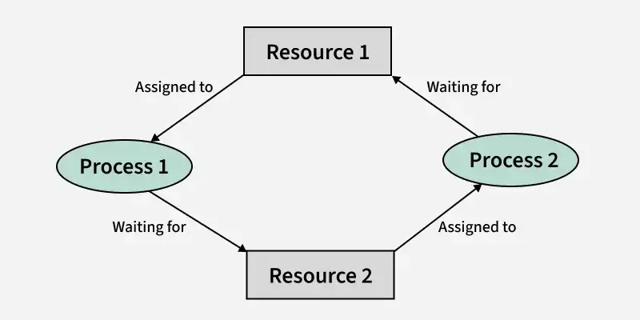

Deadlocks
1. Introduction to Deadlock

Definition
A deadlock is a permanent blocking state where: - Two or more processes are waiting for each other - Each process holds a resource and waits for other resources - None of them can proceed without the resources held by others
Real-world Analogy
Classic Dining Philosophers Problem - 5 philosophers at round table - 5 forks between them - Need 2 forks to eat - Each picks up one fork and waits for anothe
2. Coffman Conditions for Deadlock
All four conditions must occur simultaneously for deadlock:
2.1 Mutual Exclusion
- Resources cannot be shared
- Examples:
- Printer can only be used by one process
- Database record being updated
- Memory allocation
2.2 Hold and Wait
- Process holds at least one resource
- Waits for additional resources
Process A --holds--> Resource 1 --needed by--> Process B
Process B --holds--> Resource 2 --needed by--> Process A
2.3 No Preemption
- Resources can't be forcibly taken
- Only voluntary release allowed
- Example: Can't force-quit a process writing to a file
2.4 Circular Wait
- Circular chain of processes
- Each waiting for resource held by next process
P1 → P2 → P3 → P4 → P1 (circular chain)
3. Resource Allocation Graph (RAG)
A graph showing processes as circles, resources as squares, request edges as arrows from processes to resources, and allocation edges as arrows from resources to processes)
Components
- Processes (circles)
- Resources (squares)
- Request edges (P → R)
- Assignment edges (R → P)
Interpretation
- Cycle in graph indicates possible deadlock
- No cycle = No deadlock
- Cycle with single instance = Definite deadlock
- Cycle with multiple instances = Possible deadlock
4. Banker's Algorithm (Detailed)
4.1 Data Structures
Available: Vector of length m (available resources)
Max: n × m matrix (maximum demand)
Allocation: n × m matrix (currently allocated)
Need: n × m matrix (remaining need)
Where:
n = number of processes
m = number of resource types
4.2 Algorithm Steps
Safety Algorithm
-
Initialize:
Work = Available Finish[i] = false for all i -
Find process that can be satisfied:
Find i where: Finish[i] = false Need[i] ≤ Work -
Update:
Work = Work + Allocation[i] Finish[i] = true -
Repeat until:
- All Finish[i] = true (safe state)
- No eligible process found (unsafe state)
Resource Request Algorithm
-
Check if request is valid:
Request ≤ Need Request ≤ Available -
Try allocation:
Available = Available - Request Allocation = Allocation + Request Need = Need - Request -
Run Safety Algorithm
- If safe: allocation granted
- If unsafe: revert changes
4.3 Example Scenario
3 Processes (P0, P1, P2)
3 Resource types (A, B, C)
Available = [3,3,2]
Max = [7,5,3] // P0
[3,2,2] // P1
[9,0,2] // P2
Allocation = [0,1,0] // P0
[2,0,0] // P1
[3,0,2] // P2
Need = Max - Allocation
5. Deadlock Prevention Strategies
5.1 Mutual Exclusion Prevention
- Use shareable resources
- Implement spooling
- Buffer outputs
5.2 Hold and Wait Prevention
Strategy 1: Request all resources initially
Process {
request(all_resources);
use(resources);
release(all_resources);
}
Strategy 2: Release current before requesting new
Process {
release(current_resources);
request(new_resources);
}
5.3 No Preemption Prevention
- Implement resource preemption
- Save process state
- Restore when resources available
5.4 Circular Wait Prevention
- Order resources numerically
- Request in ascending order
R1 < R2 < R3 < ... < Rn
6. Deadlock Detection
6.1 Wait-For Graph
- Simplified RAG
- Only shows process dependencies
- Cycle indicates deadlock
6.2 Detection Algorithm
1. Mark all processes unvisited
2. For each process:
- Perform DFS
- If cycle found, deadlock exists
3. If no cycles, no deadlock
7. Recovery Methods
7.1 Process Termination
- Kill all deadlocked processes
- Drastic but simple
-
High cost
-
Kill one process at a time
- Until deadlock cycle breaks
- Select based on:
- Priority
- Computation time
- Resources held
- Resources needed
7.2 Resource Preemption
- Select victim
- Rollback to safe state
- Starvation prevention
8. Implementation Examples
8.1 Database Transaction Deadlock
-- Transaction 1
BEGIN TRANSACTION;
UPDATE Account1 SET balance = balance - 100;
UPDATE Account2 SET balance = balance + 100;
COMMIT;
-- Transaction 2 (concurrent)
BEGIN TRANSACTION;
UPDATE Account2 SET balance = balance - 50;
UPDATE Account1 SET balance = balance + 50;
COMMIT;
8.2 Thread Deadlock
mutex_a.lock();
mutex_b.lock();
// Critical section
mutex_b.unlock();
mutex_a.unlock();
9. Best Practices
- Design Level
- Resource hierarchy
- Timeout mechanisms
- Dead
lock detection
- Implementation
- Consistent lock ordering
- Try-lock mechanisms
-
Avoid nested locks
-
Monitoring
- Deadlock detection systems
- Resource usage tracking
- Process state monitoring